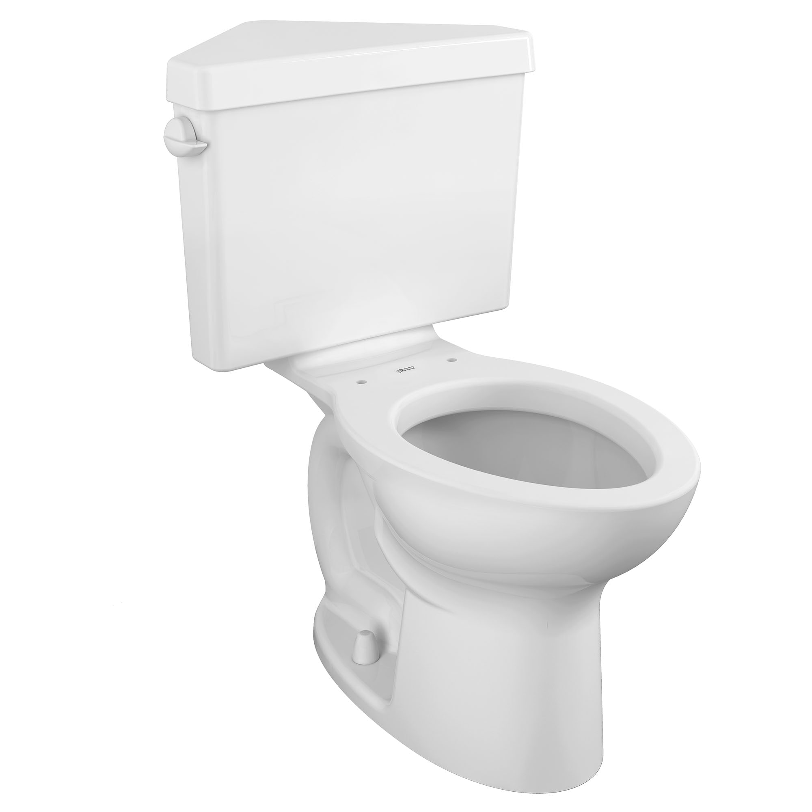

|  | |
|
index page01 page02 |
ITW2022 - page02 |
História da sanitaOther very early toilets that used flowing water to remove the waste are found at Skara Brae in Orkney, Scotland, which was occupied from about 3100 BC until 2500 BC. Some of the houses there have a drain running directly beneath them, and some of these had a cubicle over the drain. Around the 18th century BC, toilets started to appear in Minoan Crete, Pharaonic Egypt, and ancient Persia. Fonte: wikipedia |
|